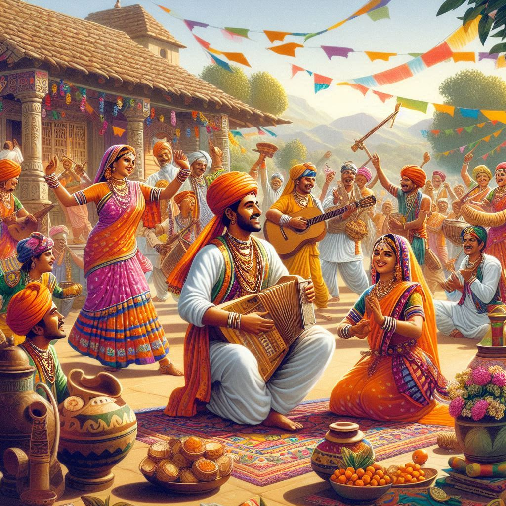
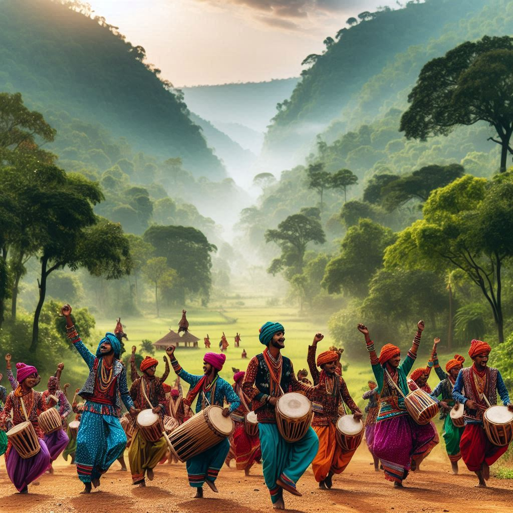

Chhattisgarh, located in central India, is known for its rich and vibrant culture deeply rooted in tradition and indigenous heritage. The state's culture is a fascinating blend of tribal customs, folklore, music, dance, festivals, and crafts. Here’s an exploration of Chhattisgarh’s culture:
1. Tribal Influence
- Tribal Communities: Chhattisgarh is home to a large tribal population, with more than 40% of its people belonging to various indigenous tribes, such as the Gonds, Baigas, and Oraons. The tribal communities have significantly shaped the state’s cultural identity, particularly through their customs, rituals, and festivals.
- Language: The most widely spoken language is Chhattisgarhi, a dialect of Hindi. Tribal languages, such as Gondi, are also commonly spoken in tribal regions.
2. Festivals
- Bastar Dussehra: One of the longest and most unique Dussehra celebrations in India, lasting 75 days. Unlike the traditional Ramayana-based Dussehra, this festival is more of a tribute to local deities and tribal customs.
- Goncha Festival: Celebrated with mock hunts, the Goncha festival in Bastar involves the use of wooden pistols to symbolize ancient tribal warrior traditions.
- Hareli Festival: A festival linked to agriculture, where farmers pray for a good harvest, and traditional games like Gedi (stilts) are played.
- Madai Festival: Celebrated by various tribal communities, this festival is dedicated to worshipping local deities, with grand processions, music, and dance performances.
3. Music and Dance
- Pandavani: A unique narrative form of folk singing in Chhattisgarh, Pandavani recounts tales from the Mahabharata. The performances are dramatic and engaging, with the lead singer using minimal props to narrate the story.
- Raut Nacha: A traditional dance performed by the Yadav (cowherd) community during the post-Diwali period. It is an expression of devotion to Lord Krishna and is performed with energetic movements and vibrant costumes.
- Saila Dance: Performed by tribal men, especially during the harvest season, this dance involves intricate footwork and rhythmic clapping.


4. Crafts and Handicrafts
- Bell Metal Craft: Chhattisgarh is famous for its Dokra (Bell metal) handicrafts, which involve the lost-wax casting technique. Tribal artisans create figurines, idols, jewelry, and decorative items that are admired globally.
- Terracotta: Clay craft is another traditional art form, where artisans create figures of animals, deities, and household items using terracotta. These items are often used in rituals and decorations.
- Tumba Art: A unique form of craft where dried gourds are hollowed out and decorated with intricate designs to create water vessels, musical instruments, and decorative items.
5. Cuisine
- Bore Baasi: A traditional dish made from cooked rice soaked in water and eaten with pickles, curd, and chutney, often considered a staple food.
- Faraa: A type of dumpling made from rice flour, often served with chutney.
- Chana Samosa: A popular street food in the region, filled with spicy chickpea stuffing.
- Arsa: A sweet dish made from jaggery and rice, often prepared during festivals and special occasions.
6. Clothing
- Men: In rural and tribal areas, men typically wear dhoti or lungi, along with a shirt or kurta. Some tribal men wear colorful headgear as part of their traditional dress.
- Women: Women wear sarees, often draped in a unique manner, especially among tribal communities. These sarees are made from natural fibers and are known for their earthy colors and traditional designs.
7. Religion and Beliefs
- Local Deities: Each tribe or community often worships its own deities. Nature worship is also significant, with rivers, forests, and animals playing an important role in their spiritual beliefs.
- Temples: The state is home to many ancient temples, such as the famous Bhoramdeo Temple and the Danteshwari Temple in Bastar, which reflect the architectural and religious history of the region.
8. Art and Painting
- Pithora Painting: A form of wall painting done by tribal communities. These paintings depict tribal gods, folk tales, and significant events in the life of the community.
- Godna Art: A tattooing tradition that has evolved into a form of painting. In Godna art, body tattoos are replicated on cloth or paper, telling stories of the tribal communities' beliefs and customs.
Conclusion
The culture of Chhattisgarh is a vibrant mix of tribal traditions, folk art, music, and dance, celebrated through a variety of festivals and rituals. It is a land where ancient customs blend with the rhythms of daily life, offering a unique glimpse into the indigenous ways of life in India. Chhattisgarh’s rich cultural heritage is not only preserved but also proudly celebrated, making it a unique cultural destination in the country.